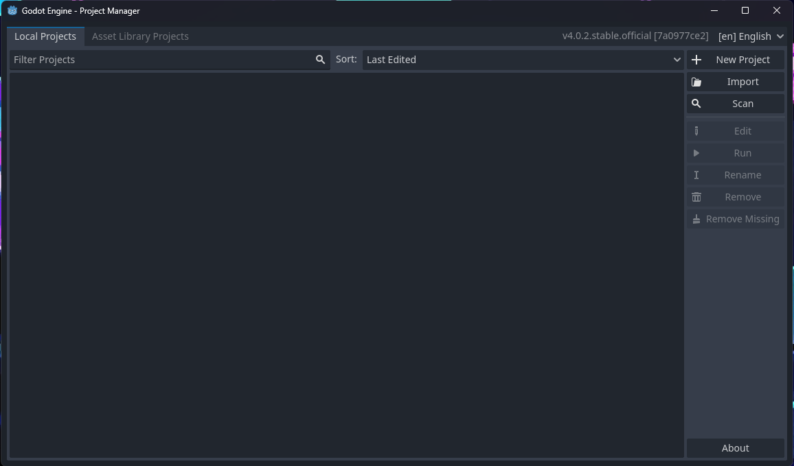
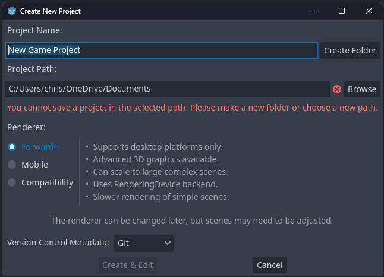
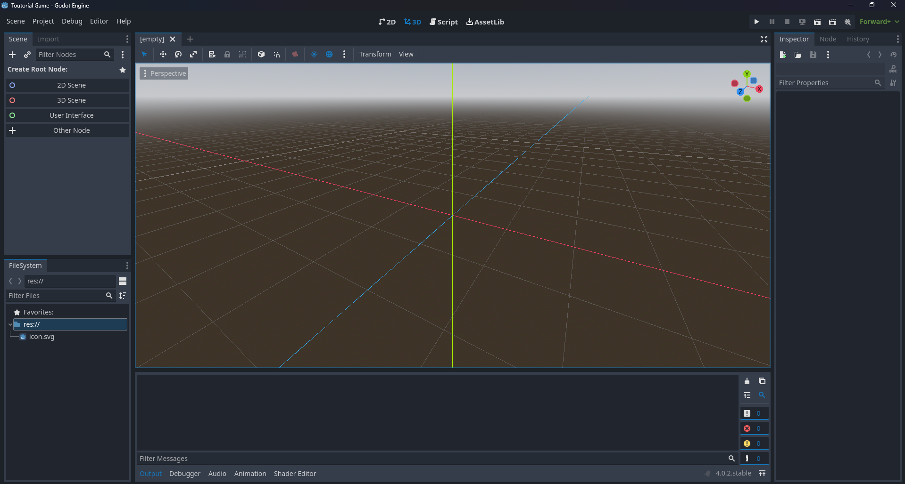

Godot is a free Open Source 2D and 3D game engine. It has a fast growing community with addons
coming out constantly. This page will focus on making a new project and learing the layout
for the engine.
Downloading Godot
You can download Godot 4.2 at godotengine.org. The engine supports
Windows, macOS, and Linux.
How to Create a project
Once you've opened up Godot you should see this screen here:

Click on new project and this screen should pop up:

Once you see this you may be confused. The top part is naming your project, you can title it anything.
Below is the project path. Click on create folder to create a folder that will store all of your game files.
Under that is the rendering option. Rendering is the computer drawing the frames of your project. Forward+ is
what you would probably use. It is made for PC games which most people are using. Mobile is for mobile devices
which will have lower end lighting and resolution. Cambatability will have very low graphics and resolution and
is made for very low end devices.
Intro to the Godot layout
You have now created your project. You are now inside of the Godot Enine. Your screen should look like this:

Once you see this screen you will first notice the center which is the scene. The scene is where all of
your objects are displayed. This is your game world. Your levels your characters and other stuff are displayed there. to the left
is your object tree. The object tree is where all of your objects are, like platforms, characters, enemies, ect.
You can select an object from the object tree and change its position and size and other properties.
right below the object tree is the file system. This is your game files like scripts, images, textures, 3D models ect.
to the right of that is the console. This will tell you if there are errors and also helps with debugging.
To the right of the screen is the inspector. This will display all of a objects properties. (Scale, position, textures, and more)
That is pretty much the basics of Godot's layout but there is alot more that is impossible to fit in one web page. If you want to
learn to make a simple game click on the link below.